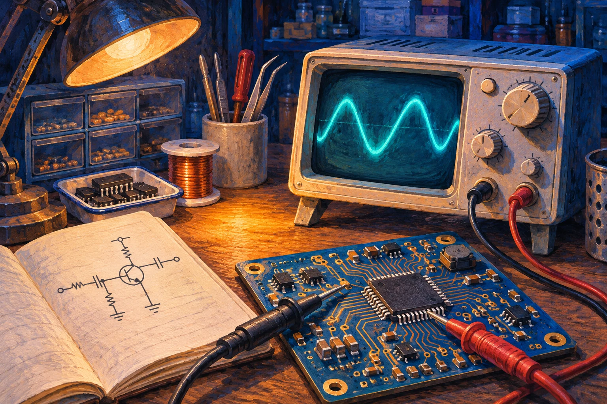

电源 · 驱动设计
高侧 MOSFET 为什么不能一直开着？
自举供电需要补充电荷。先看驱动电源如何充电，再讨论占空比能开多大。
自举驱动硬件设计与板级调试
从原理图到示波器，把设计为什么这样做、遇到问题怎么查，一篇一篇讲清楚。

当前展示直流电源上的周期性小幅纹波。
按顺序读这三篇，走一遍板级调试。
按主题浏览，或从眼前的故障找一篇。
自举供电需要补充电荷。先看驱动电源如何充电，再讨论占空比能开多大。
自举驱动把导通、开关和驱动损耗逐项估算，才能知道换管子应该改善哪个参数。
开关损耗用纹波推导峰值电流，再分别核对饱和、温升和控制器允许的电感范围。
电感选型陶瓷电容的有效容量要看具体料号和直流偏压，耐压值无法直接代替容量曲线。
有效容量精密 SAR ADC 的 RC 要兼顾噪声和采样建立时间，多路切换时尤其要检查大阶跃。
ADC 驱动噪声密度、源阻抗、噪声增益和积分带宽要一起看，先判断哪一项占主导。
模拟噪声分别画出开通和关断的电流路径，找出切换时电流变化最快的区域。
热回路毫欧级采样中，铜皮和焊盘电阻也会进入结果。把载流路径和电压取样位置画清楚。
开尔文取样端接匹配传输线，偏置确定空闲电平。先辨认主干和两端，再检查每个节点。
RS-485先分清哪根线被谁拉住，再按器件状态决定总线清除、复位或重新上电。
总线恢复用短接地、统一带宽和可重复的测点，把测到的噪声分清楚。
示波器沿着供电和地走一圈，找出电容放得很近、回路却很远的情况。
去耦从参考平面、过孔和开槽三个位置，检查高速信号的回流路径。
回流路径用上升时间和低电平灌电流给电阻划一个范围，再到板上验证。
I²C先看 TX 上有没有边沿，再分清接线、电平、波特率和固件问题。
UART试试更短的关键词，例如「电容」「回流」或「UART」。